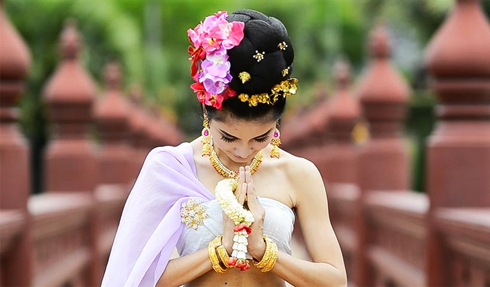

Thai culture is a rich tapestry woven from centuries of Buddhist tradition, royal reverence, and communal harmony. Central to daily life is Buddhism, which influences everything from architecture to festivals like Songkran and Loy Krathong. The wai, a traditional gesture of pressed palms and a slight bow, embodies respect and is integral to Thai etiquette. Social interactions are guided by principles of hierarchy and politeness, with an emphasis on maintaining harmony and avoiding conflict. Cuisine plays a vital role, characterized by a balance of sweet, sour, salty, and spicy flavors, often enjoyed in communal settings. Festivals such as Songkran, the Thai New Year, and Loy Krathong, the Festival of Lights, showcase the nation's deep spiritual roots and communal spirit. Despite modernization, traditional customs and respect for the monarchy remain central to Thai identity, reflecting a society that values both its heritage and its evolving future.
Features of Thai Culture
Buddhism – Central to daily life and values.
Respect and Hierarchy – Seen in gestures like the wai and social interactions.
Royal Reverence – Deep respect for the monarchy.
Festivals and Traditions – Celebrations like Songkran and Loy Krathong.
Thai Cuisine – Known for balance of flavors and communal eating.
Art and Architecture – Influenced by religion and history.
Family and Community – Strong sense of unity and support.
Traditions and Customs of Thai Culture
Thailand’s traditions and customs form the very soul of its national identity. Rooted in centuries of history, religion, monarchy, and regional diversity, these cultural norms influence how Thai people live, interact, celebrate, and connect with one another. From the graceful wai greeting to the spirited water splashes of Songkran, these customs are not merely rituals—they are expressions of deeply held values such as respect, harmony, generosity, and spiritual balance.

At the core of Thai customs is Theravāda Buddhism, which has shaped everything from social behaviors to festivals and life milestones. However, Thai culture is also a blend of animist beliefs, Hindu influences, and longstanding royal traditions, creating a unique tapestry of practices that vary by region, yet resonate nationwide. The monarchy, for instance, still plays a vital symbolic role, and its influence is reflected in acts of loyalty and public ceremonies.
At the core of Thai customs is Theravāda Buddhism, which has shaped everything from social behaviors to festivals and life milestones. However, Thai culture is also a blend of animist beliefs, Hindu influences, and longstanding royal traditions, creating a unique tapestry of practices that vary by region, yet resonate nationwide. The monarchy, for instance, still plays a vital symbolic role, and its influence is reflected in acts of loyalty and public ceremonies.
Social interactions in Thailand are governed by an unspoken code of politeness and hierarchy. Respect for elders, teachers, monks, and authority figures is deeply ingrained and observed through both speech and body language. Practices like the wai are not only greetings but expressions of humility and social order.
Traditions in Thailand are not relics of the past—they are actively preserved, adapted, and lived every day. Whether through temple rituals, traditional weddings, festive celebrations, or the quiet reverence shown in daily life, Thai customs remain vibrant and meaningful in modern society. They also serve as a powerful draw for visitors who wish to not only see Thailand but truly understand its soul.
By exploring this section, you’ll gain insight into how Thai people express their values, celebrate life, honor the divine, and maintain social harmony—offering a deeper appreciation for this rich and enduring culture.